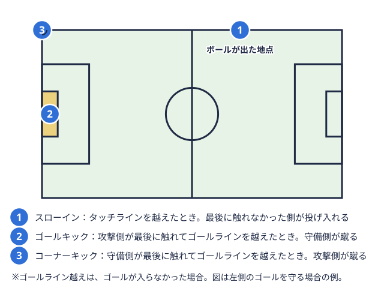
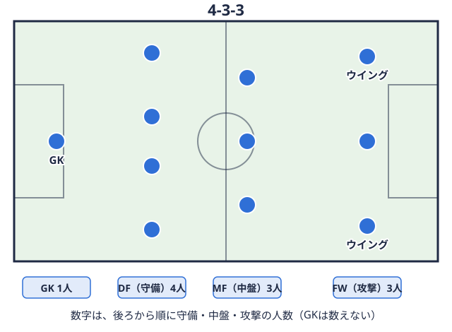

技術・戦術 2026-09-18
サッカーのポジション適性・特徴｜GK・DF・MF・FWの役割を解説
はじめての方向け
大学サッカー部に入部してから、これまでと違うポジションを任されたり、逆に「自分は本当に今のポジションに向いているのか」と迷ったりする部員は少なくありません。高校まで経験してきたポジションと、大学のチーム事情や監督の方針が合わないこともあります。この記事では、GKゴールを守る選手で、チームで唯一、ペナルティエリア内で手を使える。パスをつなぐ役もこなす。 用語辞典で見る・DF・MF守備と攻撃をつなぐ選手の総称。中盤でボールに触れる機会が多く、守備的・攻撃的な役割に分かれる。用語辞典で見る・FW相手ゴールの近くでプレーし、得点を取ることが最も大きな役割の選手。用語辞典で見るそれぞれの役割と求められる特徴を整理したうえで、大学サッカーの現場でポジション適性を考えるときに確認しておきたいポイントをまとめます。
用語辞典で見る・DF・MF守備と攻撃をつなぐ選手の総称。中盤でボールに触れる機会が多く、守備的・攻撃的な役割に分かれる。用語辞典で見る・FW相手ゴールの近くでプレーし、得点を取ることが最も大きな役割の選手。用語辞典で見るそれぞれの役割と求められる特徴を整理したうえで、大学サッカーの現場でポジション適性を考えるときに確認しておきたいポイントをまとめます。
なぜ今、ポジション適性を見直す機会があるのか
大学サッカーでは、高校時代とチーム編成や戦術が大きく変わるため、入部後にポジションを変えられたり、複数ポジションを兼務するよう求められたりする場面があります。監督やコーチから「体格的にセンターバック守備の選手のうち、ゴール前の中央で相手の攻撃の選手を止める役。背が高く体の強い選手が多い。用語辞典で見るを試してほしい」「運動量を生かしてボランチ中盤の中央で、守備をしながら後ろから攻撃を組み立てる選手。攻守のバランスを取る役。用語辞典で見る（中盤の中央で守備と攻撃の組み立てを担う位置）をやってみないか」といった提案を受け、戸惑う新入部員もいます。ポジションごとの役割と求められる要素を整理しておくと、こうした提案の意図を理解しやすくなり、自分の特徴をどう生かせるかを考える材料になります。
サッカーの4ポジションの役割と特徴
サッカーの基本ポジションはゴールキーパー（GK）、ディフェンダー守備を受け持つ選手の総称。中央で守るセンターバックと、サイドで守るサイドバックに分かれる。用語辞典で見る（DF）、ミッドフィルダー（MF）、フォワード（FW）の4つに大きく分かれます。Jリーグ公式サイトの解説によると、それぞれの役割は次のように整理できます。
用語辞典で見るとセンターバック、ボランチ、サイドハーフ中盤の左右の端でプレーし、ドリブルで仕掛けたり、後ろの選手と協力して攻撃に厚みを出したりする役。用語辞典で見るとトップ下中盤の選手のうち、攻撃の最前線の選手のすぐ後ろでプレーし、チャンスを作ったりシュートを狙ったりする役。用語辞典で見る、フォワード）GK（ゴールキーパー）
ペナルティエリアゴール前にある大きな長方形の区画。ゴールを守る選手（ゴールキーパー）が手を使えるのは、この中だけ。  用語辞典で見る内で手を使うことが認められている唯一のポジションで、シュートを防ぐことが最優先の役割です。近年はゴールキック攻撃側が最後に触れたボールがゴールラインを越えたとき、守備側がゴール前の小さな区画から蹴って再開する方法。
用語辞典で見る内で手を使うことが認められている唯一のポジションで、シュートを防ぐことが最優先の役割です。近年はゴールキック攻撃側が最後に触れたボールがゴールラインを越えたとき、守備側がゴール前の小さな区画から蹴って再開する方法。
DF（ディフェンダー）
中央でクロスボール（サイドから中央へ蹴り込まれるボール）や相手FWと競り合う「センターバック」と、サイドの上下動で攻守に関わる「サイドバック」に大きく分かれます。相手の攻撃を阻止することが中心的な役割で、1対1で当たり負けしないフィジカルの強さや、浮き球の処理に必要な高さ・読みの鋭さが求められます。サイドバックは攻撃参加の機会も多く、運動量と正確なクロスの技術が求められる場面が増えています。
MF（ミッドフィルダー）
攻撃と守備の両方に関わる「攻守の繋ぎ役」で、「守備的MF（ボランチ）」と「攻撃的MF（トップ下・サイドハーフなど）」に区分されることが一般的です。サッカーメディアのサカステ広島の解説では、ミッドフィルダーは試合中に11〜13キロメートル走行する選手もいると紹介されており、豊富な運動量と戦術眼が求められるポジションだとされています。チームのスタイルがもっとも表れやすいポジションともいわれます。
FW（フォワード）
ゴールを奪うことが最大の任務で、フォーメーション選手の並べ方。4-4-2のように、ゴールキーパーを除き、後ろから守備・中盤・攻撃の人数を並べて表す。  用語辞典で見るによって1〜3人で構成されます。センターフォワード（中央で得点を狙う役）、ウイング相手ゴール近くの左右の端から、ドリブルやゴール前へのパスで得点に絡む攻撃の選手。
用語辞典で見るによって1〜3人で構成されます。センターフォワード（中央で得点を狙う役）、ウイング相手ゴール近くの左右の端から、ドリブルやゴール前へのパスで得点に絡む攻撃の選手。
「向いている性格」をどう捉えるか
ポジションごとに「向いている性格」が語られることがありますが、性格と適性の関係は個人差が大きく、断定できるものではありません。たとえば「GKは独立心が強い人が向いている」「FWは目立ちたがりな人が向いている」といった傾向を紹介するメディアもありますが、これはあくまで一つの見方であり、慎重な性格のFWや協調性の高いGKも実際には数多く活躍しています。性格よりも、体格・運動量・技術のどこに強みがあるかを整理したうえで、監督やコーチと相談しながらポジションを決めていく進め方の方が実践的だといえます。
大学サッカーの現場でポジション適性を考えるときのポイント
大学入学のタイミングは、体格やフィジカルが大きく変化する時期と重なるため、ポジションコンバート（担当ポジションを変えること）が起こりやすい節目でもあります。高校まで前線でプレーしていた選手が大学で体格の変化やチーム事情からセンターバックにコンバート選手の担当する位置を変えること。例えば、攻撃の選手が守備の位置を任される。用語辞典で見るされる、逆に守備の運動量を評価されてボランチを任されるといったケースは珍しくありません。
自分がコンバートを打診されたときや、新しいポジションへの挑戦を考えるときに参考になるのが、実際に大学サッカーのリーグで戦っているチームの選手層です。本サイトでは関東・関西・東北・北信越の4連盟、それぞれ1部・2部の全チームについて、選手が所属するチームページや順位表を公開しています。たとえば関東大学サッカーリーグ1部のチーム一覧や関西学生サッカーリーグ1部の順位表から各チームのページに進むと、そのチームがどのような戦績を重ねているかを確認できます。自分の所属リーグや対戦相手のチーム編成を見ながら、監督が求める役割と自分の特徴を照らし合わせてみると、コンバートの提案を前向きに検討しやすくなります。
ポジション変更を考えるときに確認したいこと
ポジション変更や新しいポジションへの挑戦を検討する際は、次のような点を整理しておくと判断がしやすくなります。
- 今のポジションで感じている物足りなさや不安は、技術面か、フィジカル面か、戦術理解の面か
- 新しいポジションで求められる役割のうち、自分の強みが生かせそうな要素はどこか
- 監督やコーチが提案の背景として何を評価しているか（運動量、フィジカル、判断力など）を直接確認できているか
- 練習の中で新しいポジションを試す期間や機会が設けられているか
一つのポジションに固定して考えるのではなく、シーズンや学年が進む中で役割が変わっていくことは大学サッカーでは珍しくありません。役割ごとに求められる要素を理解しておくことは、自分自身の成長の方向性を考えるうえでも役立ちます。
複数ポジションをこなす「ポリバレント」という選択肢
サイドバックとボランチ、センターバックとサイドバックなど、複数のポジションを高いレベルでこなせる「ポリバレント」な選手は、控えメンバーが多い大学チームでは出場機会を得やすくなる傾向があります。一つのポジションに絞って専門性を高める道と、複数ポジションに対応できる幅を広げる道のどちらが自分に合っているかは、所属するチームの選手層や監督の起用方針によっても変わります。自分のチームが1部・2部のどのあたりに位置し、どのようなメンバー構成で戦っているかを普段から把握しておくと、監督からの提案を受けたときにも判断がしやすくなります。北信越や東北のリーグも含め、各リーグのチーム一覧や順位表は本サイトで随時公開しています。
ポジション理解は、自分のプレーだけでなく対戦相手を観察するときにも役立ちます。相手チームがどのポジションに特徴のある選手を配置しているかを事前に把握しておくと、練習や試合前のミーティングでの話し合いにも具体性が出やすくなります。
まとめ
サッカーのポジションはGK・DF・MF・FWそれぞれに異なる役割と求められる特徴があり、性格との結びつきは断定できるものではなく、あくまで一つの傾向として捉えるのが実践的です。大学サッカーでは入学を機にポジションコンバートが起こりやすく、監督やコーチとのすり合わせが重要になります。本サイトが公開している各リーグ・各チームのページも参考にしながら、自分の特徴と向き合ってポジションを考えてみてください。
出典
この部活・競技を応援したい方へ。
取材してほしい部活を募集中
オフシーズン・引退後に、長期インターンという選択
部活で培った力を実務で試す。16タイプ診断（30秒）で合う企業がわかります。